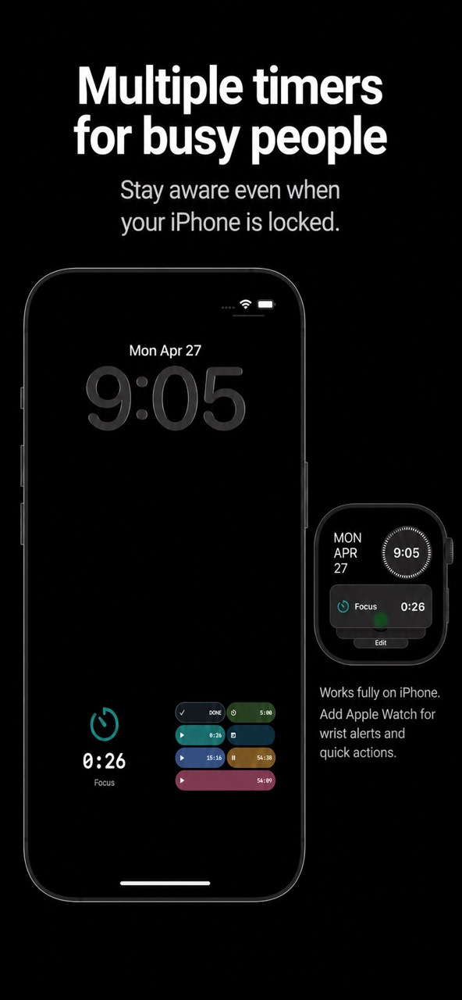
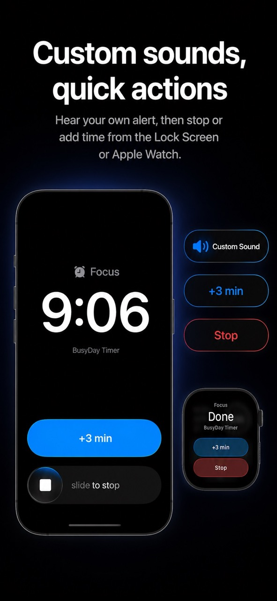
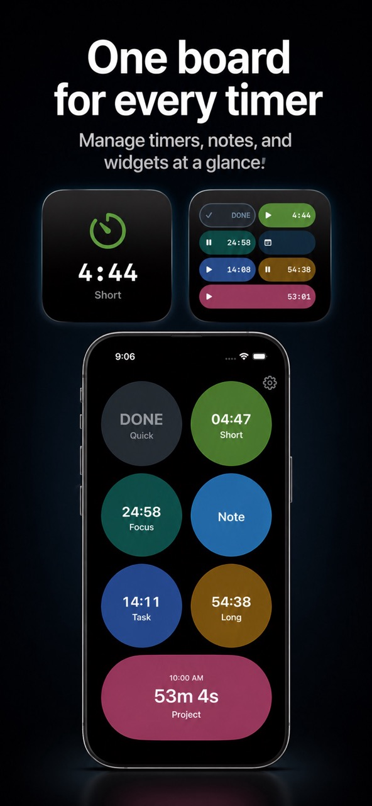
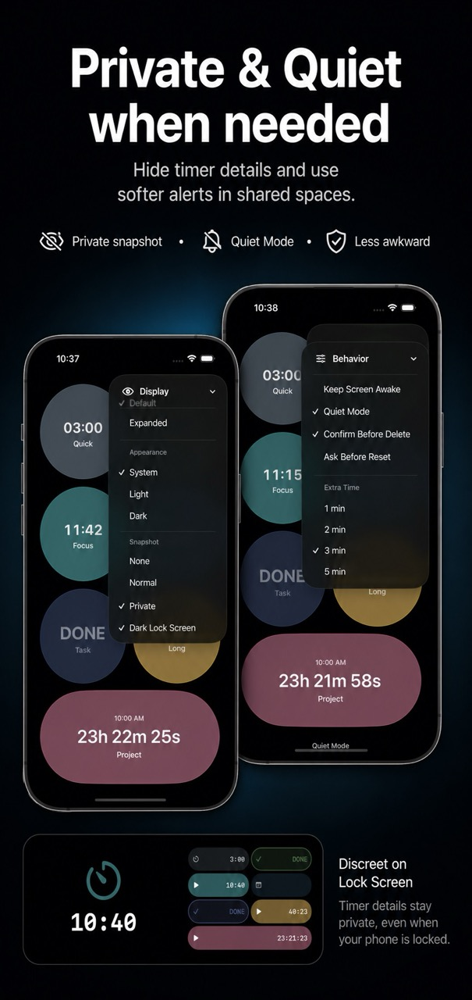
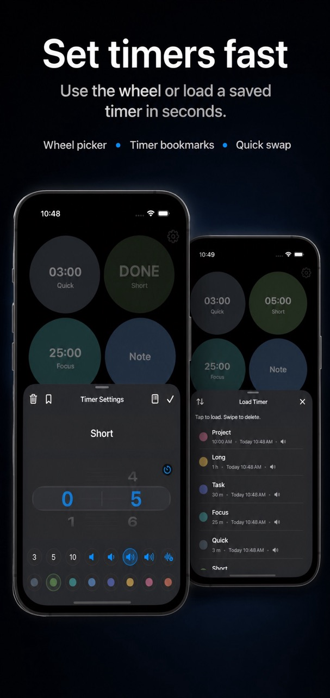
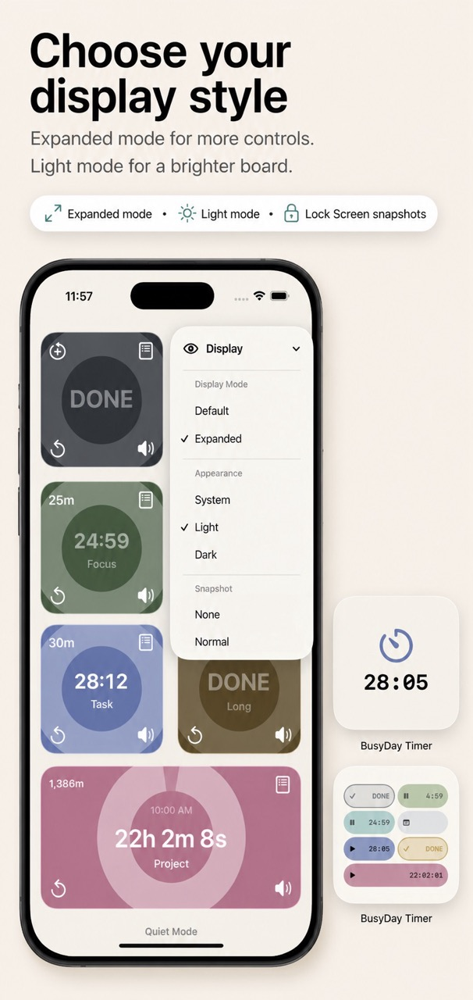
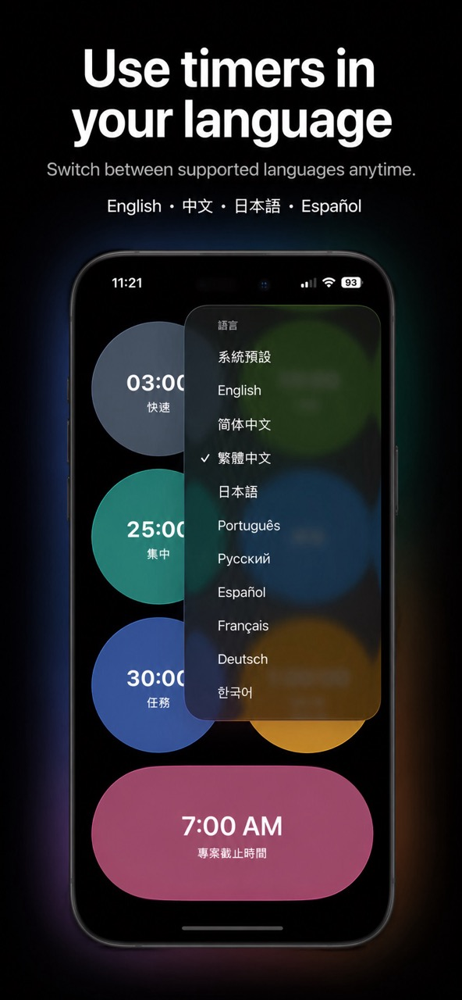

One Board
Manage several timers at the same time from a single screen instead of switching between separate timers.
A multi-timer board for busy days. Keep multiple timers, notes, and widgets in one clear place, with Lock Screen alerts, Apple Watch actions, widgets, Quiet Mode, and custom alarm sounds.

Use one board to manage multiple timers and notes. BusyDay Timer is designed for quick checks when your hands are full, your iPhone is locked, or you only have a moment to see what is next.
Manage several timers at the same time from a single screen instead of switching between separate timers.
Use the wheel picker and saved timer bookmarks to set common timers quickly.
Choose display styles and palettes so the timer board fits your day and remains easy to scan.
Long-press a timer to open Timer Settings. Use the wheel and bookmarks to set timers quickly.
Tap a timer to start or pause it. Tap a ringing timer to stop it. Tap a finished timer to reset it.
Save common timer setups as bookmarks, then load them when you need the same timer again.
Use display styles and color palettes to keep timers clear for your current workflow.
BusyDay Timer helps you stay aware even when you are not inside the app.
Check timer status from the Lock Screen snapshot. When a timer rings, you can stop it or add extra time right away.
Check the next timer on Apple Watch, and stop or add time when a timer rings.
Add timer widgets to check your timers from the Home Screen.
Turn on Quiet Mode for softer alerts in shared spaces, offices, classrooms, kitchens, or other places where loud alarms may be awkward. On Apple Watch, use the Watch's own Silent Mode.
Record your own alarm sound for each timer so different timers can use different alerts.
Last updated: May 4, 2026
BusyDay Timer does not collect, sell, or share personal data.
Timer names, notes, settings, preferences, custom alarm sounds, and saved timers are stored locally on the user's device and are not sent to the developer.
BusyDay Timer does not use third-party analytics, advertising SDKs, tracking SDKs, or account login services.
Apple services such as iCloud, TestFlight, App Store purchases, crash reports, and Apple Watch synchronization are provided by Apple and are subject to Apple's privacy practices.
For support, contact chanshuowu@icloud.com. Information included in support emails is used only to respond to the request.
For privacy on shared or locked screens, BusyDay Timer also includes private Lock Screen snapshots to hide timer details when you do not want others to see your task names.
These screenshots show the main timer board, setup controls, Lock Screen actions, Watch actions, display options, and language settings.






Long-press a timer to open Timer Settings. Use the wheel picker, or load a saved timer bookmark for a common timer.
Tap a timer to start or pause it. Tap a ringing timer to stop it. Tap a finished timer to reset it.
Yes. BusyDay Timer supports custom alarm sounds, including recording your own alert sound for each timer.
Turn on Quiet Mode for softer alerts. On Apple Watch, use the Watch's own Silent Mode.
Yes. Use private Lock Screen snapshots to hide timer details when you do not want others to see your task names.
Yes. The app lets you switch between supported languages anytime.
If you need help with BusyDay Timer, include your iPhone model, iOS version, and a short description of what happened.
Support: chanshuowu@icloud.com